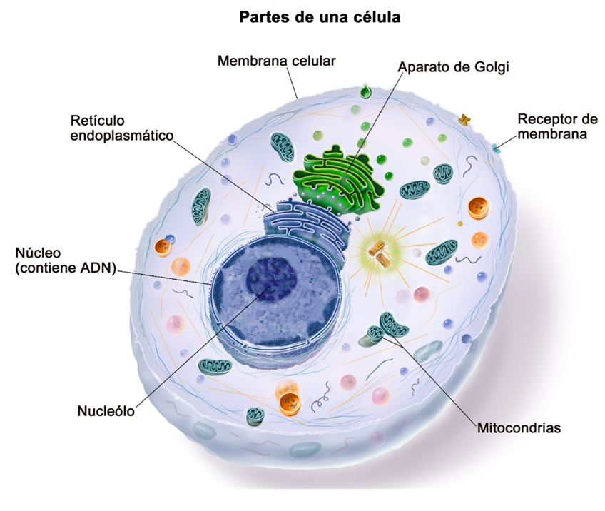
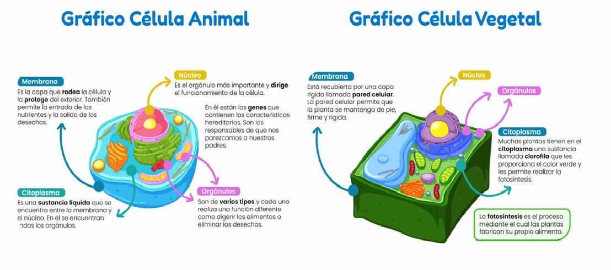
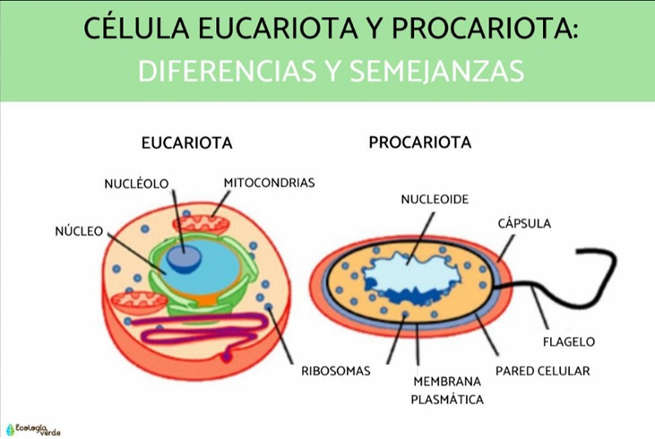
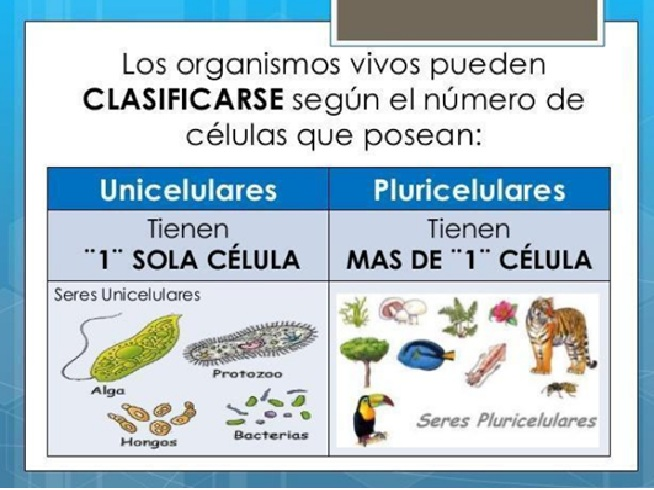
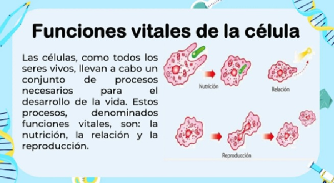
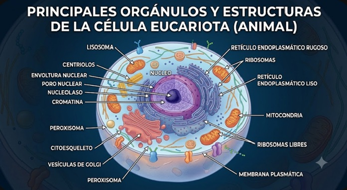

Unidad 【Número】: 【Título de la Unidad】
【Breve descripción de lo que aprenderás en esta unidad】
📌 Introducción
【escribe aqui】
📌 La célula
La célula es la unidad estructural, funcional y de origen más pequeña que compone a todos los seres vivos. Pensar en ella como una "microfábrica" ayuda a entender cómo funciona: tiene paredes, áreas de procesamiento de energía, una oficina central de control y sistemas de transporte.

Partes clave de una célula
Casi todas las células comparten tres componentes fundamentales:
- Membrana plasmática (o celular): La cubierta exterior que protege a la célula y controla qué sustancias entran y salen (nutrientes, agua, desechos).
- Citoplasma: El líquido gelatinoso que llena el interior de la célula y sostiene a los organelos (las pequeñas "herramientas" que realizan tareas específicas).
- Núcleo: El compartimento que protege la información genética en las células eucariotas y funciona como una "oficina central" donde se controla qué hace la célula.

Tipos principales de células
| Tipo | Características principales | Ejemplos |
|---|---|---|
| Procariota | Más simples y pequeñas. No tienen núcleo definido; su ADN flota libre en el citoplasma. | Bacterias y arqueas |
| Eucariota | Más complejas y grandes. Tienen un núcleo delimitado por una membrana que protege la información genética y dirige las funciones celulares. | Células animales, vegetales, hongos y protistas |

Unicelular y pluricelular
Las formas de vida se pueden agrupar según cuántas células tienen:
- Organismos unicelulares: Están formados por una sola célula que realiza todas las funciones necesarias para vivir. Ejemplos: muchas bacterias (procariotas) y algunos protistas (eucariotas).
- Organismos pluricelulares: Están formados por muchas células que se especializan en tareas distintas y trabajan en conjunto. Ejemplos: plantas, animales, hongos y algas multicelulares (eucariotas).
En procariotas, como las bacterias, la célula única es el organismo completo: no tienen núcleo y todas las funciones se llevan a cabo dentro de la misma célula. En eucariotas, tanto los organismos unicelulares como los pluricelulares pueden existir, pero siempre con un núcleo bien definido que organiza la información genética.

Funciones vitales
Todas las células realizan funciones vitales que les permiten crecer, obtener energía, reproducirse y responder al entorno. Estas funciones son esenciales tanto para procariotas como para eucariotas.
- Nutrición: Captar y transformar sustancias para obtener energía. Ejemplo: una bacteria procariota toma glucosa del medio y realiza reacciones en el citoplasma para obtener energía.
- Relación: Detectar y responder a cambios en el entorno. Ejemplo: una ameba (eucariota unicelular) se mueve hacia una fuente de alimento usando sus seudópodos.
- Reproducción: Generar nuevas células o individuos. Ejemplo: una célula eucariota puede dividirse por mitosis para formar dos células hijas con igual material genético.
- Respiración celular: Obtener energía a partir de nutrientes. Ejemplo: las células animales eucariotas usan oxígeno para extraer energía de la glucosa en las mitocondrias.

Por ejemplo, en una célula procariota como la Escherichia coli, la nutrición y la respiración ocurren en el citoplasma y la membrana celular, mientras que en una célula eucariota animal, la respiración se realiza en las mitocondrias y el núcleo coordina la reproducción.
Principales orgánulos y estructuras internas de la célula eucariota
Las células eucariotas tienen varias partes internas especializadas que trabajan en conjunto para mantener la vida. Aquí aparecen los 13 orgánulos y estructuras más relevantes:
- Núcleo: Contiene el material genético y controla las actividades celulares. Ejemplo: el núcleo de una célula animal dirige cuándo la célula debe dividirse.
- Membrana plasmática: Regula el paso de sustancias hacia dentro y fuera de la célula. Ejemplo: permite la entrada de nutrientes y la salida de desechos.
- Citoplasma: Medio líquido donde flotan los orgánulos y se realizan muchas reacciones químicas. Ejemplo: en el citoplasma se produce la glucólisis para obtener energía.
- Ribosomas: Fabrican proteínas a partir de las instrucciones del ARN. Ejemplo: una célula eucariota produce proteínas necesarias para su estructura y función.
- Retículo endoplasmático rugoso: Ensambla proteínas que serán exportadas o usadas dentro de la célula. Ejemplo: produce las enzimas que se exportan a otras partes del cuerpo.
- Retículo endoplasmático liso: Sintetiza lípidos y desintoxica sustancias. Ejemplo: en células del hígado, elimina toxinas y fabrica colesterol.
- Aparato de Golgi: Procesa, empaca y distribuye proteínas y lípidos. Ejemplo: modifica una proteína antes de enviarla fuera de la célula.
- Mitocondrias: Producen energía en forma de ATP mediante la respiración celular. Ejemplo: las células musculares tienen muchas mitocondrias para obtener energía al moverse.
- Cloroplastos: Realizan la fotosíntesis en células vegetales y producen glucosa usando luz solar. Ejemplo: en una célula de hoja de planta, convierten la luz en alimento.
- Lisosomas: Contienen enzimas que degradan sustancias y reciclan componentes dañados. Ejemplo: eliminan restos de bacterias dentro de una célula blanca.
- Vacuolas: Almacenan agua, nutrientes y desechos. Ejemplo: en células vegetales, la vacuola central mantiene la presión interna y almacena agua.
- Citoesqueleto: Red de fibras que mantiene la forma celular y permite el movimiento interno. Ejemplo: ayuda al transporte de vesículas dentro de la célula.
- Centríolos: Organizan el huso mitótico durante la división celular en células animales. Ejemplo: se duplican antes de la división para separar los cromosomas.

Cuatro tipos de células
Las células se pueden clasificar en cuatro tipos según su forma, función y estructura. A continuación se explica cada tipo con una imagen representativa.
Célula animal

Las células animales son eucariotas, no tienen pared celular y pueden presentar formas variadas. Tienen núcleos definidos y organelos como mitocondrias y lisosomas.
Célula vegetal

Las células vegetales son eucariotas y cuentan con pared celular rígida, cloroplastos para fotosíntesis y una vacuola grande que ayuda a mantener la forma.
Célula procariota
Las células procariotas, como las bacterias, son más simples y no tienen núcleo verdadero. Su ADN está libre en el citoplasma y no poseen orgánulos rodeados por membranas.
Célula de protista

Los protistas son eucariotas generalmente unicelulares con núcleo definido. Pueden tener estructuras especializadas como seudópodos, cilios o flagelos para moverse y alimentarse.
🔗 Enlaces de interés
🎥 【La Célula: Estructura, Partes y Funciones - Mario Carreón】 🔬 【Células Procariotas y Eucariotas: Diferencias y Características】 🧬 【Organelos Celulares y sus Funciones - Explicación Rápida】✍️ Actividad de la unidad
- TALLER 1 aquí .